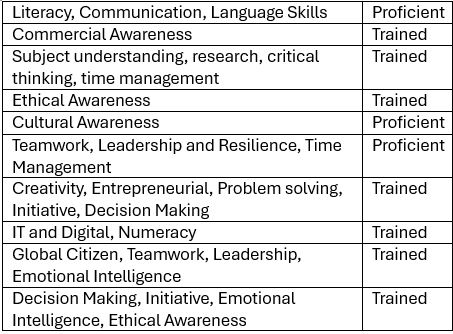

Georgia Niamh
Unit 11
SWOT and Skills matrix:
Skills Matrix
I filled in my skills matrix and feel that I have a good grasp of most areas so ranked myself as trained. I ranked myself as proficient in literacy communication and language skills as this is something I partake in daily as a computer science teacher in charge of curriculum. I have to regularly plan lessons for students aged 11-16 that are accessible yet relevant and challenging so I feel I am proficient in this area.
Below is an overview of my rankings:

SWOT analysis:
Strengths:
Working as a team as demonstrated in the team projects and in my job managing through working as a team with other teachers of different teaching disciplines. I am also good at delivering information in an easy to digest format both visually and verbally.
Weaknesses:
I feel my commercial awareness could be stronger as I have not had to engage in this in my professional life and have only engaged in this area through the course of my degree. This is an area of weakness I wish to improve upon.
Opportunities:
I think there are opportunities to increase my knowledge of my technical skills as I only use python, SQL and HTML for my job feel due to this my knowledge of artefacts such as Git are lacking. I am currently undertaking my own personal coding projects to try and improve this area.
Threats:
The main threat I have is my work as I am incredibly busy with work most of the time and this reduces the time I have to hone my skills. I unfortunately have no chance to change this as there are no other computer science teachers who I can split the work with and I am having to create the curriculum for 5 year groups on my own so I would say lack of time is the biggest threat I face.